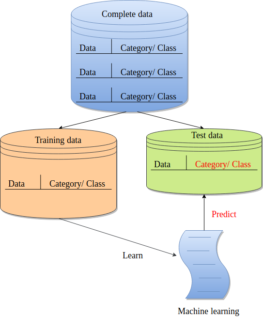

Machine learning uses techniques from statistics, mathematics and computer science to make computer programs learn from data. It is one of the most popular fields of computer science and finds applications in multiple streams of data analysis such as classification, regression, clustering, dimensionality reduction, density estimation and many more. Some real-life applications are spam filtering, medical diagnosis, autonomous driving, recommendation systems, facial recognition, stock prices prediction and many more. The following image shows a basic flow of any machine learning task. Data is provided by a user to a machine learning algorithm for analysis.
Figure 1: Flow of a machine learning task.
There are multiple ways in which machine learning can be used to perform data analysis. They depend on the nature of data and the kind of data analysis. The following image shows the most popular ones. In supervised learning techniques, the categories of data records are known beforehand. But in unsupervised learning, the categories of data records are not known.
Figure 2: Different types of machine learning.
In general, machine learning can be used in multiple real-life tasks by applying its variants as depicted in the following image.
Figure 3: Real-life usage of machine learning.
The following image shows how a classification task is performed. The complete data is divided into training and test sets. The training set is used by a classifier to learn features. It results in a trained model and its robustness (of learning) is evaluated using the test set (unseen by the classifier during the training).
Figure 4: Supervised learning.
This tutorial shows how to use a machine learning module implemented as a Galaxy tool. The data used in this tutorial is available at Zenodo.
Agenda
Performing a machine learning task (classification) using a tool involves the following steps:
The datasets required for this tutorial contain 9 features of breast cells which include the thickness of clump, cell-size, cell-shape and so on (more information). In addition to these features, the training dataset contains one more column as target. It has a binary value (0 or 1) for each row. 0 indicates no breast cancer and 1 indicates breast cancer. The test dataset does not contain the target column.
hands_on Hands-on: Data upload
Create a new history for this tutorial
tip Tip: Creating a new history
Click the new-history icon at the top of the history panel
If the new-history is missing:
Click on the galaxy-gear icon (History options) on the top of the history panel
Select the option Create New from the menu
Import the following datasets and choose the type of data as tabular.
Open the Galaxy Upload Manager (galaxy-upload on the top-right of the tool panel)
Select Paste/Fetch Data
Paste the link into the text field
Press Start
Close the window
By default, Galaxy uses the URL as the name, so rename the files with a more useful name.
Rename datasets to breast-w_train and breast-w_test.
tip Tip: Renaming a dataset
Click on the galaxy-pencilpencil icon for the dataset to edit its attributes
In the central panel, change the Name field
Click the Save button
The datasets should look like these:
Figure 5: Training data (breast-w_train) with targets (9 features and one target).Figure 6: Test data (breast-w_test) (9 features and no target).
Train a classifier
In this step, we will use the SVM (support vector machine) classifier for training on the breast-w_train dataset. The classifier learns a mapping between each row and its category. SVM is a memory efficient classifier which needs only those data points which lie on the decision boundaries among different classes to predict a class for a new sample. The rest of the data points can thrown away. We will use the LinearSVC variant of SVM which is faster. Other variants SVC and NuSVC have high running time for large datasets. The last column of the training dataset contains a category/class for each row. The classifier learns a mapping between data row and its category which is called a trained model. The trained model is used to predict the categories of the unseen data.
hands_on Hands-on: Train a classifier
Support vector machines (SVMs) for classificationtool with the following parameters to train:
“Select a Classification Task”: Train a model
“Classifier type”: Linear Support Vector Classification
“Select the type of prediction”: Predict class labels
See predictions
The last column of the predicted dataset shows the category of each row. A row either gets 0 (no breast cancer) or 1 (breast cancer) as its predicted category.
hands_on Hands-on: See the predicted column
Click on view data link of the dataset created after executing the previous step.
The last column of the tabular data shows the predicted category (target) for each row.
details Additional ML resources
Read more about machine learning using scikit-learnhere.
keypoints Key points
Machine learning algorithms learn features from data.
It is used for multiple tasks such as classification, regression, clustering and so on.
Multiple learning tasks can be performed using Galaxy’s machine learning tools.
For the classification and regression tasks, data is divided into training and test sets.
Each sample/record in the training data has a category/class/label.
A machine learning algorithm learns features from the training data and do predictions on the test data.
Feedback
Did you use this material as an instructor? Feel free to give us feedback on how it went.
Batut et al., 2018 Community-Driven Data Analysis Training for Biology Cell Systems 10.1016/j.cels.2018.05.012
details BibTeX
@misc{statistics-machinelearning,
author = "Anup Kumar",
title = "Basics of machine learning (Galaxy Training Materials)",
year = "2021",
month = "01",
day = "06"
url = "\url{/training-material/topics/statistics/tutorials/machinelearning/tutorial.html}",
note = "[Online; accessed TODAY]"
}
@article{Batut_2018,
doi = {10.1016/j.cels.2018.05.012},
url = {https://doi.org/10.1016%2Fj.cels.2018.05.012},
year = 2018,
month = {jun},
publisher = {Elsevier {BV}},
volume = {6},
number = {6},
pages = {752--758.e1},
author = {B{\'{e}}r{\'{e}}nice Batut and Saskia Hiltemann and Andrea Bagnacani and Dannon Baker and Vivek Bhardwaj and Clemens Blank and Anthony Bretaudeau and Loraine Brillet-Gu{\'{e}}guen and Martin {\v{C}}ech and John Chilton and Dave Clements and Olivia Doppelt-Azeroual and Anika Erxleben and Mallory Ann Freeberg and Simon Gladman and Youri Hoogstrate and Hans-Rudolf Hotz and Torsten Houwaart and Pratik Jagtap and Delphine Larivi{\`{e}}re and Gildas Le Corguill{\'{e}} and Thomas Manke and Fabien Mareuil and Fidel Ram{\'{\i}}rez and Devon Ryan and Florian Christoph Sigloch and Nicola Soranzo and Joachim Wolff and Pavankumar Videm and Markus Wolfien and Aisanjiang Wubuli and Dilmurat Yusuf and James Taylor and Rolf Backofen and Anton Nekrutenko and Björn Grüning},
title = {Community-Driven Data Analysis Training for Biology},
journal = {Cell Systems}
}
congratulations Congratulations on successfully completing this tutorial!
 Anup Kumar
Anup Kumar